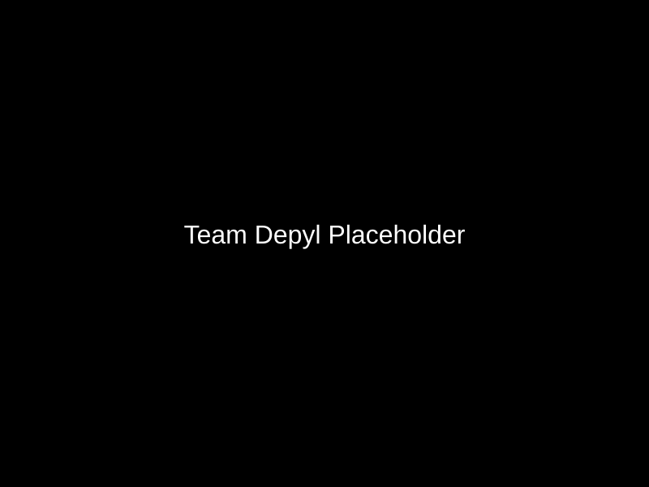
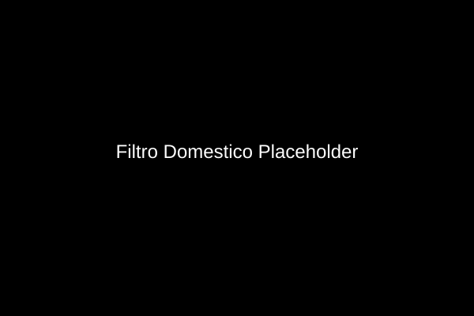
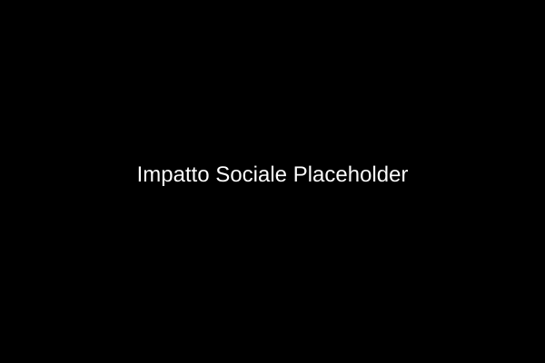
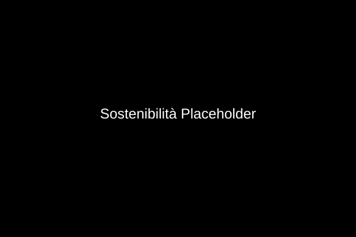

È da questa consapevolezza che nasce Depyl
Vendere impianti per la depurazione dell'acqua e destinare parte dei ricavi a progetti che portino l'acqua potabile nelle aree del mondo dove è ancora scarsa o difficilmente accessibile.
Creare un mondo in cui tutti abbiano accesso alla risorsa più preziosa: l'acqua.
Depyl è un'azienda impegnata nella lotta contro la crisi idrica globale. Operiamo in tutta Italia e in Europa con soluzioni innovative per la depurazione dell'acqua.

Impianti di depurazione per abitazioni private con filtri scomponibili per facilitare il riciclo e ridurre l'impatto ambientale.

Sistemi di depurazione per ristoranti e attività commerciali con tecnologie avanzate e personalizzate.
Una parte dei nostri profitti finanzia progetti di accesso all'acqua potabile in Paesi in via di sviluppo.

I nostri filtri domestici sono progettati per essere scomponibili, facilitando il riciclo con una corretta raccolta differenziata.

Scegli Depyl per un futuro in cui l'acqua sia accessibile a tutti
Contattaci